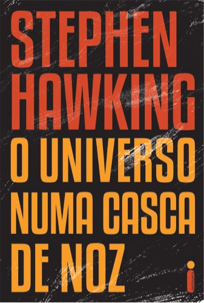

O Universo numa Casca de Noz
O Universo numa Casca de Noz (The Universe in a Nutshell, título original) é um livro sobre física teórica escrito pelo renomado físico Stephen Hawking. Voltado explicitamente ao público leigo, apresenta, de forma clara e sem o uso de matemática, as principais ideias antes e hoje debatidas pelos físicos teóricos, abrangendo desde o microcosmo quântico até o macrocosmo universal; abordando desde a possibilidade de existência de partículas fundamentais ainda não detectadas, de buracos negros e de viagens no tempo, até o destino biológico e tecnológico da humanidade em um futuro não muito distante.
"O Universo numa Casca de Noz" é um best-seller escrito pelo matemático, astrofísico e doutor em Cosmologia pela Universidade de Cambridge, o inglês Stephen Hawking, no qual expõe várias de suas ideias acerca do cosmos e sua história em meio à apresentação das ideias encerradas em diversos segmentos da física teórica; ideias que abrangem desde as cientificamente estabelecidas até aquelas que encontram-se atualmente nas fronteiras do conhecimento humano, lutando por um lugar à luz da ciência. O livro foi vencedor do The Aventis Prizes for Science Books de 2002.
Hawking procura esclarecer ao público leigo os conceitos e as variantes encontrados no universo da Física e da Matemática, complementando seus argumentos com imagens coerentes e práticas. Tais imagens ainda são acompanhadas de breves explicações, promovendo uma maior assimilação dos conceitos devido a limpidez e objetividade com a qual as pequenas considerações e explicações são elaboradas.
O leitor é apresentado a gênios responsáveis pelos muitos avanços da Física bem como a seus trabalhos, dando-se grande destaque à física teórica e moderna. Albert Einstein, Richard Feynman, James Maxwell, Max Planck, Roger Penrose, Isaac Newton, Edwin Hubble, Grassman e outros são alguns dos estudiosos que figuram no livro. As ideias e contribuições teóricas ou experimentais dessas e de outras personas de renome da ciência, a citarem-se por exemplo a experiência de Michelson-Morley, o paradoxo dos gêmeos, a constante cosmológica, os buracos negros, a teoria quântica, a singularidades, o princípio da incerteza, o conceito de tempo, a teoria de Yang-Mills, a álgebra de Grassmann, as teorias das cordas, das "p-branas", da supergravidade com 11 dimensões, a teoria do tempo imaginário, a holografia, considerações acerca da entropia e muito mais, são também muito bem explanadas pelo professor Hawking. Roger Penrose é particularmente muito citado por ser parceiro do autor em muitas de suas teorias e descobertas como a dos Teoremas de singularidade Penrose-Hawking.
Em suma, o livro proporciona ao leitor um contato com o universo das conjecturas da física moderna, abordado de uma maneira em que um leigo consiga extrair um pouco das principais ideias por outros há muito ou recentemente propostas, bem como as estudadas atualmente pelo próprio Hawking. Tais ingredientes juntos fazem do best-seller de Hawking a noz onde encontra-se um colossal universo, literalmente um "universo numa casca de noz"; capaz de existir em poucas páginas que narram, ao fim, uma breve história dos tempos - imaginário e real.
Faça o Download da obra completa Aqui